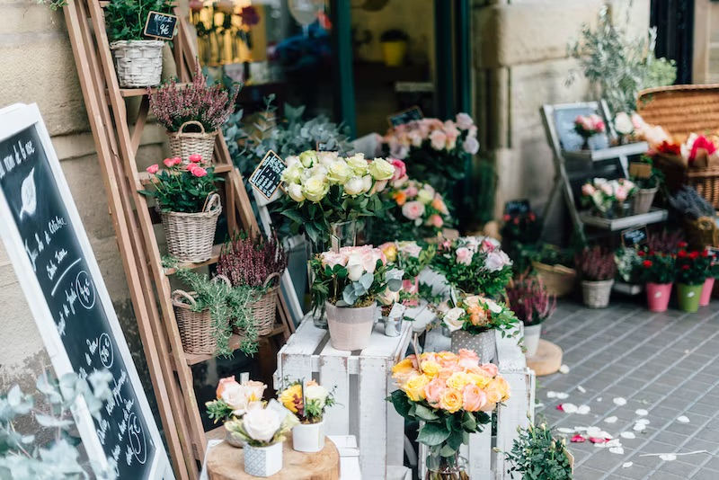

WELCOME TO PETE'S FLORIST
At Pete’s, we believe in the magic of flowers and the beauty they bring to every moment. Whether you’re celebrating a special occasion, expressing love, or simply brightening someone’s day, our handcrafted bouquets and lush plants are here to make your world bloom. Explore our delightful collection of fresh-cut flowers, from vibrant roses to exotic orchids. Need a gift that keeps on giving? Our potted plants—whether it’s a cheerful succulent or an elegant peace lily—add life and style to any space.